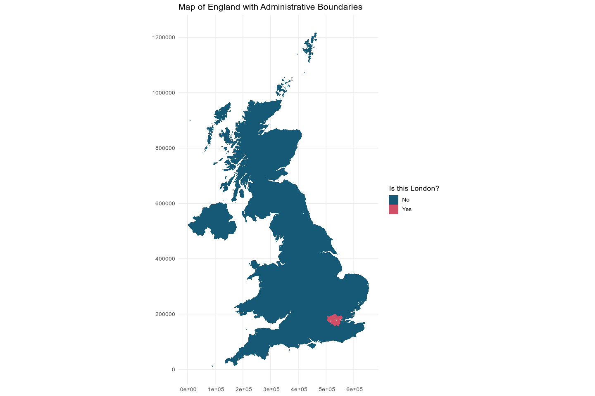
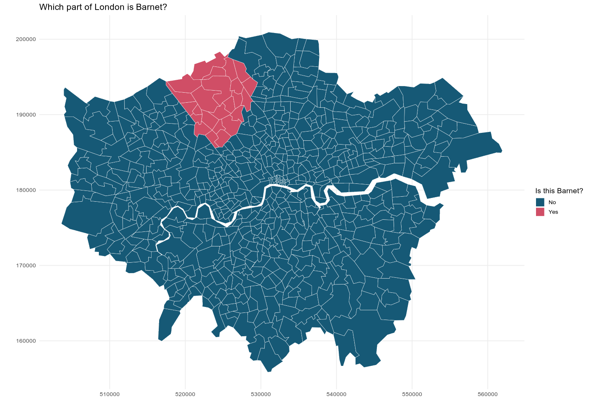
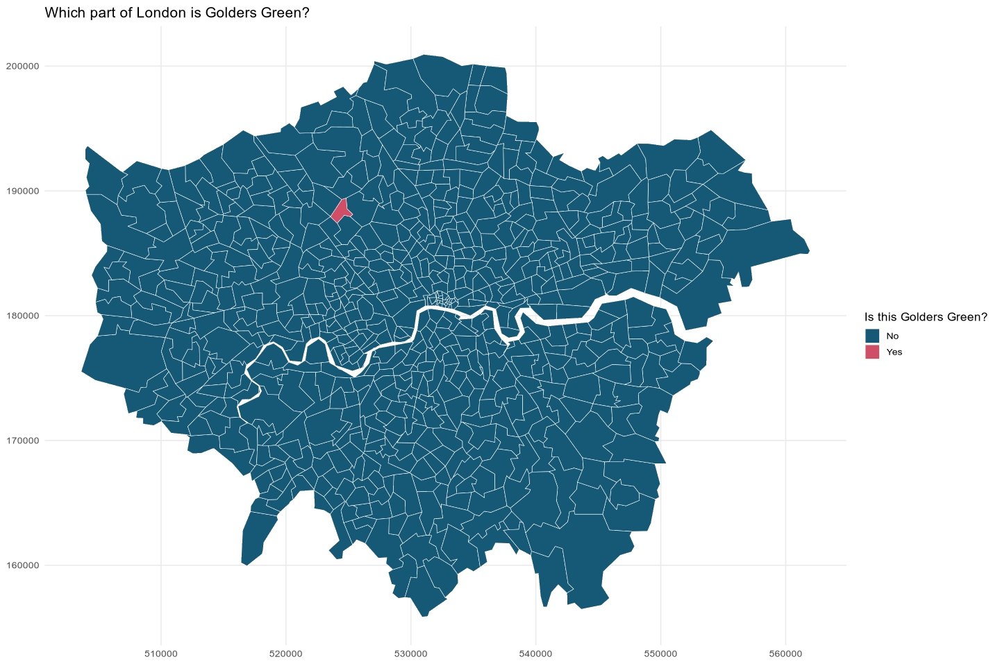
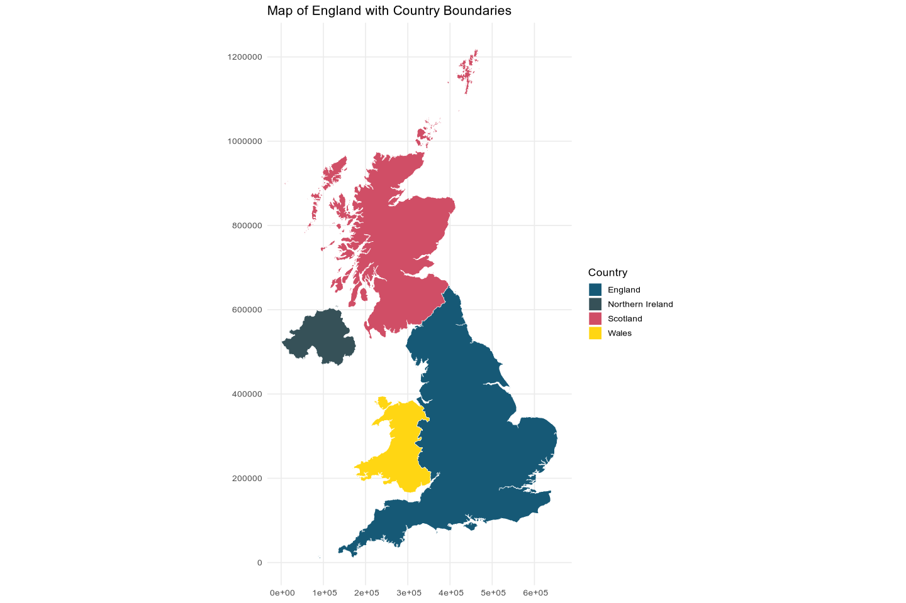
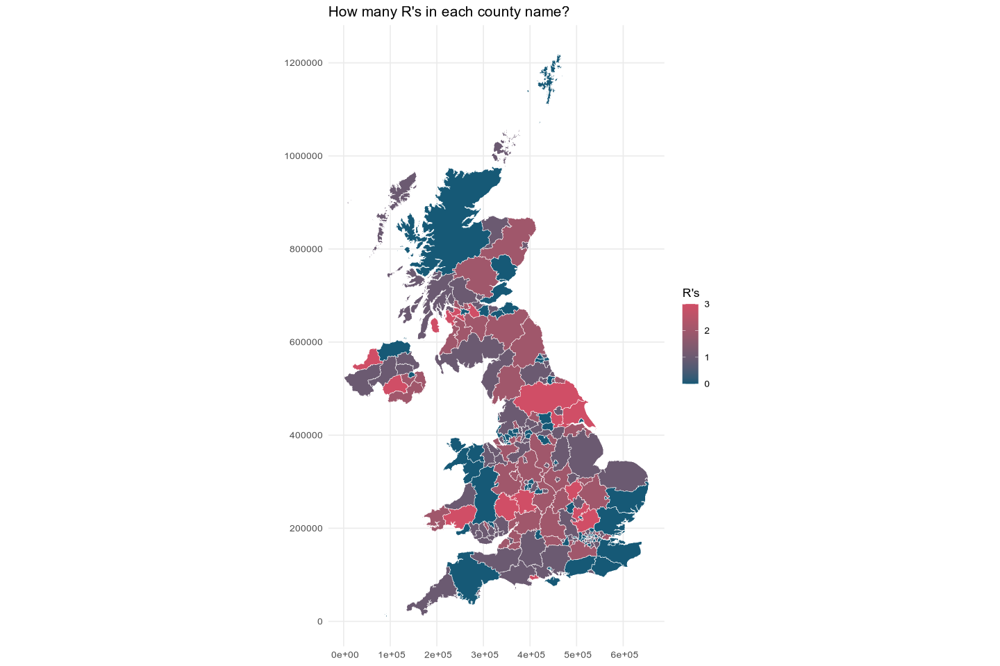
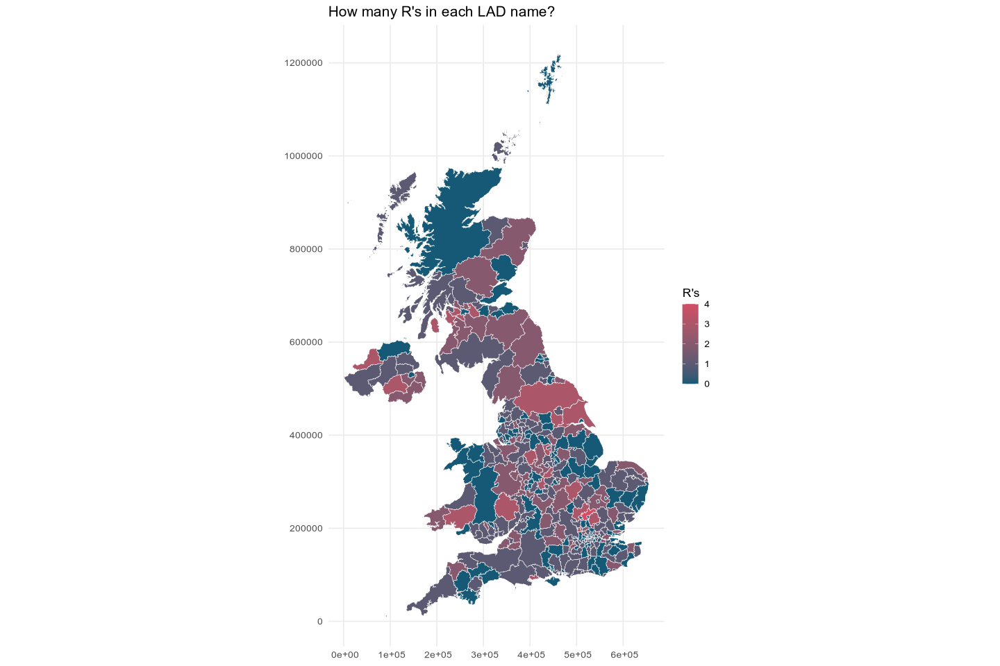
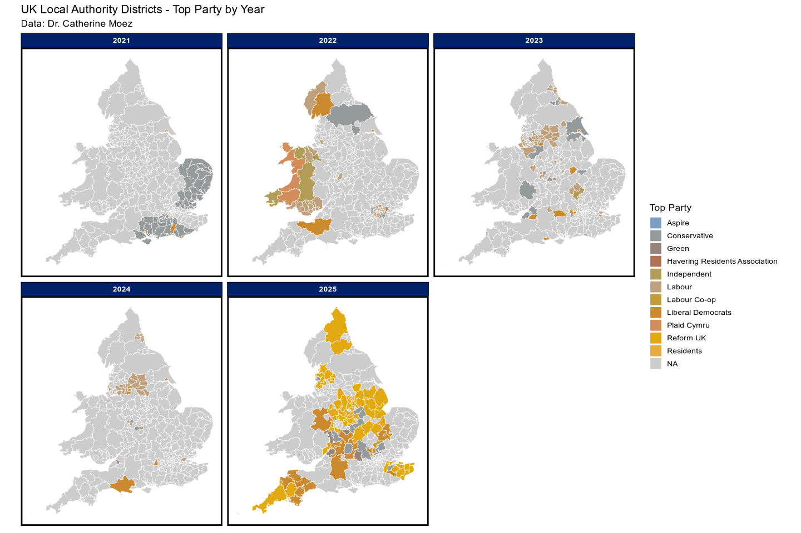

If you need an R package or Shiny dashboard for your team, you can email me or inquiry on Fiverr.
Ukmaps provides simplified maps of the United Kingdom administrative and electoral boundaries. Includes maps for England, Scotland, Wales, and Northern Ireland.
This is a very early version of the package. More features and boundaries will be added soon.
Installation
You can install the development version of ukmaps like so:
remotes::install_github("pachadotdev/ukmaps")Examples
Yes/No map of London administrative areas:
library(ukmaps)
library(dplyr)
library(ggplot2)
d <- boundaries %>%
mutate(
region_name = if_else(is.na(region_name), "Notr Available", region_name),
is_london = if_else(region_name == "London", "Yes", "No")
)
pal <- c("#165976", "#d04e66")
ggplot(d) +
geom_sf(aes(fill = is_london, geometry = geometry), color = "white", linewidth = 0) +
scale_fill_manual(values = pal, name = "Is this London?") +
labs(title = "Map of England with Administrative Boundaries") +
theme_minimal(base_size = 13)
Which part of London is Barnet?
d <- boundaries %>%
filter(region_name == "London") %>%
mutate(is_barnet = if_else(lad_name == "Barnet", "Yes", "No"))
pal <- c("#165976", "#d04e66")
ggplot(d) +
geom_sf(aes(fill = is_barnet, geometry = geometry), color = "white") +
scale_fill_manual(values = pal, name = "Is this Barnet?") +
labs(title = "Which part of London is Barnet?") +
theme_minimal(base_size = 13)
Which part of London is Golders Green?
d <- boundaries %>%
filter(region_name == "London") %>%
mutate(
is_golders_green = if_else(ward_name == "Golders Green", "Yes", "No")
)
pal <- c("#165976", "#d04e66")
ggplot(d) +
geom_sf(aes(fill = is_golders_green, geometry = geometry), color = "white") +
scale_fill_manual(values = pal, name = "Is this Golders Green?") +
labs(title = "Which part of London is Golders Green?") +
theme_minimal(base_size = 13)
The following maps use functions that aggregate the dataset to keep the package size small.
Country level map of the UK:
pal <- c("#165976", "#365158", "#d04e66", "#ffd613")
# country() aggregates the map to country level
ggplot(country()) +
geom_sf(aes(fill = country_name, geometry = geometry), color = "white") +
scale_fill_manual(values = pal, name = "Country") +
labs(title = "Map of England with Country Boundaries") +
theme_minimal(base_size = 13)
How many R’s in each county name?
# number of R's in county names
d <- counties() %>%
mutate(n = stringr::str_count(county_name, "[rR]"))
# region() aggregates the map to country level
ggplot(d) +
geom_sf(aes(fill = n, geometry = geometry), color = "white") +
scale_fill_gradient(low = "#165976", high = "#d04e66", name = "R's",
breaks = seq(0, max(d$n), by = 1)) +
labs(title = "How many R's in each county name?") +
theme_minimal(base_size = 13)
How many R’s in each LAD name? Local Authority Districts (LAD) (Local Government District (LGD) in Northern Ireland)
d <- lads() %>%
mutate(n = stringr::str_count(lad_name, "[rR]"))
ggplot(d) +
geom_sf(aes(fill = n, geometry = geometry), color = "white") +
scale_fill_gradient(low = "#165976", high = "#d04e66", name = "R's",
breaks = seq(0, max(d$n), by = 1)) +
labs(title = "How many R's in each LAD name?") +
theme_minimal(base_size = 13)
Now an example with real data for the election results (thanks to Dr. Catherine Moez for sharing the data):
library(sf)
library(tintin)
# filter the map to England and Wales, and aggregate to LAD level
# similar to the lads() function for the UK
d <- boundaries %>%
filter(country_name %in% c("England", "Wales")) %>%
group_by(lad_code, lad_name) %>%
summarise(geometry = st_union(geometry), .groups = "drop")
# Add the election results to the map
d <- d %>%
left_join(election_results) %>%
group_by(lad_name) %>%
filter(election_year == max(election_year, na.rm = TRUE)) %>%
ungroup()
# Expand LADs to all years, so all polygons appear in every year
all_years <- sort(unique(election_results$election_year))
all_lads <- d %>% select(lad_code, lad_name, geometry)
d <- tidyr::expand_grid(all_lads, election_year = all_years) %>%
left_join(election_results, by = c("lad_name", "election_year"))
ggplot(d) +
geom_sf(aes(fill = top_party, geometry = geometry), color = "white") +
# scale_fill_discrete(name = "Top Party") +
scale_fill_manual(values = tintin_clrs(
n = length(unique(d$top_party)),
option = "cigars of the pharaoh"),
na.value = "gray80",
name = "Top Party") +
labs(title = "UK Local Authority Districts - Top Party by Year",
subtitle = "Data: Dr. Catherine Moez") +
facet_wrap(~ election_year) +
theme_minimal(base_size = 13) +
theme(
axis.text = element_blank(),
axis.ticks = element_blank(),
panel.grid = element_blank(),
panel.background = element_rect(color = "black", fill = NA, linewidth = 2),
strip.background = element_rect(fill = "#012169", color = "black"),
strip.text = element_text(face = "bold", color = "white")
)